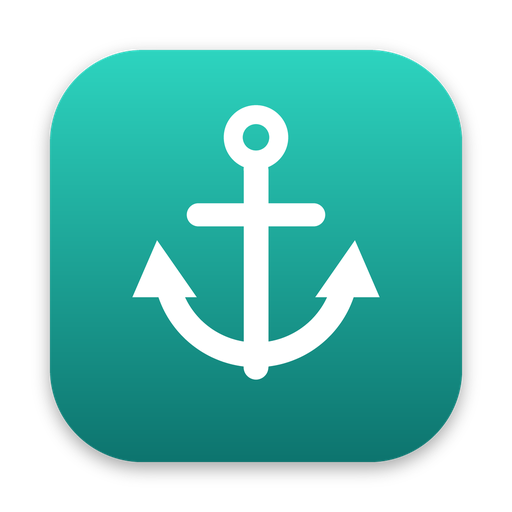

Marsa privacy policy
Last updated: 11 October 2026
Marsa is an open-source SSH and SFTP client published by Adnan Bolifa. This policy explains what the app does with your data. The short version: Marsa has no servers of its own and its developer receives nothing from the app.
What the developer collects
Nothing. Marsa has no accounts, no analytics, no advertising, no crash reporting and no telemetry. The app does not send any information to the developer or to any service operated by the developer.
What stays on your device
The servers, SSH keys, passwords, snippets and settings you enter are stored in a vault file on your device, encrypted with a key derived from your master password. If you turn on "Remember on this device", that key is kept in your operating system's credential store.
Connections the app makes
- To the servers you ask it to connect to, over SSH and SFTP.
- To the sync location you choose, if you turn sync on.
Sync is off by default. When it is on, the app uploads one file: your vault, already encrypted on your device. The sync location cannot read its contents.
Google Drive
If you choose Google Drive as the sync location, you sign in on Google's own page in your browser. Marsa never sees your Google password.
- Access requested: only the
drive.appdatascope, which covers Marsa's own hidden application-data folder in your Drive. Marsa cannot see, read, change or delete any other file in your Drive, and it does not read your name, email address or contacts. - How it is used: to store, read and update your encrypted vault file so your devices stay in sync. Nothing else.
- Where it goes: the file travels directly between your device and Google. The sign-in token Google issues is stored inside your encrypted vault on your device. Neither the file nor the token is sent to the developer or to anyone else.
- Sharing: Marsa does not transfer, sell or share Google user data with third parties, does not use it for advertising, and does not use it to develop or train AI or machine-learning models. No person other than you can read it.
Marsa's use and transfer of information received from Google APIs adheres to the Google API Services User Data Policy, including the Limited Use requirements.
To withdraw access, open your Google account's third-party connections and remove Marsa. That page also lets you delete the data Marsa stored in your Drive.
Dropbox
If you choose Dropbox, the same applies: you sign in on Dropbox's page, Marsa is limited to its own app folder, and it stores only the encrypted vault file there. You can disconnect it under Connected apps in your Dropbox settings.
Deleting your data
Deleting a vault in the app, or uninstalling the app and removing its data folder, removes the local copy. A synced copy is a file in a location you control; delete it there.
Changes and contact
Changes to this policy are published on this page, and its history is public in the project repository. For questions, open an issue at github.com/AdnanBolifa/marsa/issues.